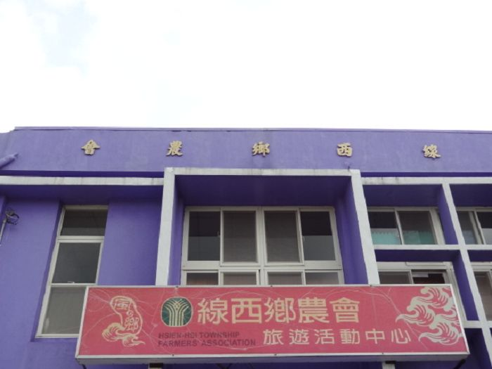
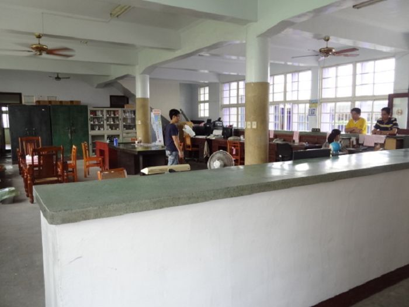
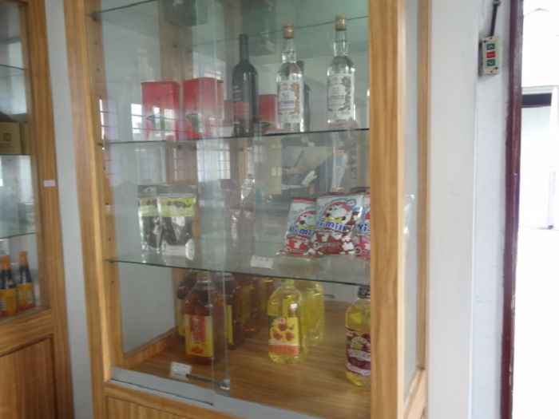
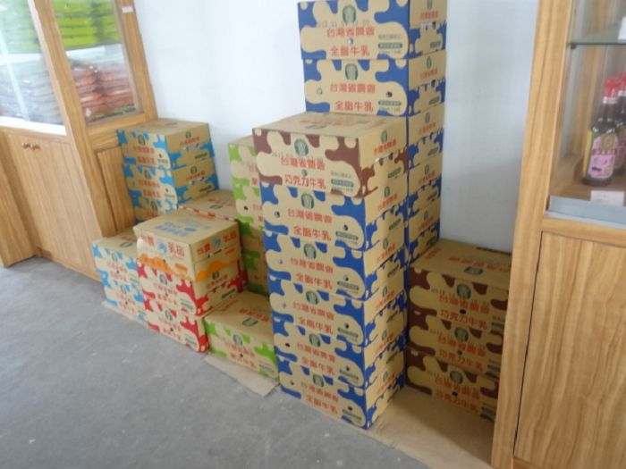

線西鄉農會供銷部(旅遊活動中心)
 |
位於德興村的紫色建築物，是一個很明顯的標地物，代表著德興，也代表著線西農會的供銷部、旅遊活動中心。 |
在農會內部有著桌椅，有時候會有村里的人來這泡茶聊天，聯絡感情。
裡面的人很熱心，我們去踏查的那天就有一位姐姐、一位哥哥和一位超熱情的伯伯邀請我們進去參觀拍照、休息一下呢！ |
 |

↑在裡面有著超多的農業食品呢！ |

↑裡面也有賣好喝的牛奶喔！ |
供銷部
‧自營業務： 辦理農藥、肥料、噴霧器、綠肥(大豆)、各鄉鎮農特產品、日用品銷售
‧運銷業務：毛豬共同運銷
‧委託業務：經收公糧及加工、代辦稻田轉作休耕補貼款轉帳
‧新銷售肥料： 43號複合肥（適合蔬菜、水稻穗肥）
旅遊活動中心
‧「走讀風之鄉一日遊」農村體驗活動（團體行程）
☆詳細相關行程請至http://www.hsienhsi.com.tw/taste.php觀看
產品介紹 ～服務電話：04-7585048～
※位於彰化縣線西鄉德興路1號
<--回德興村首頁 |